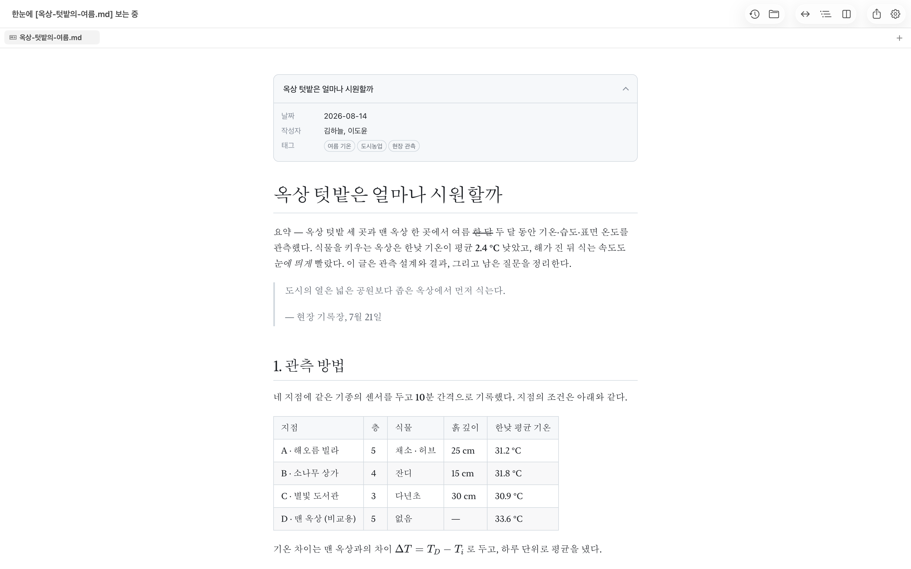
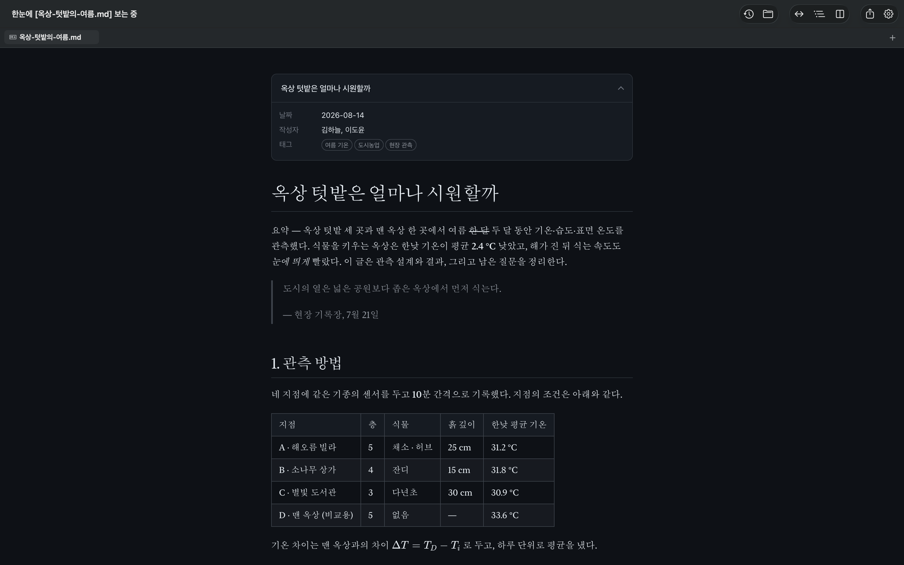
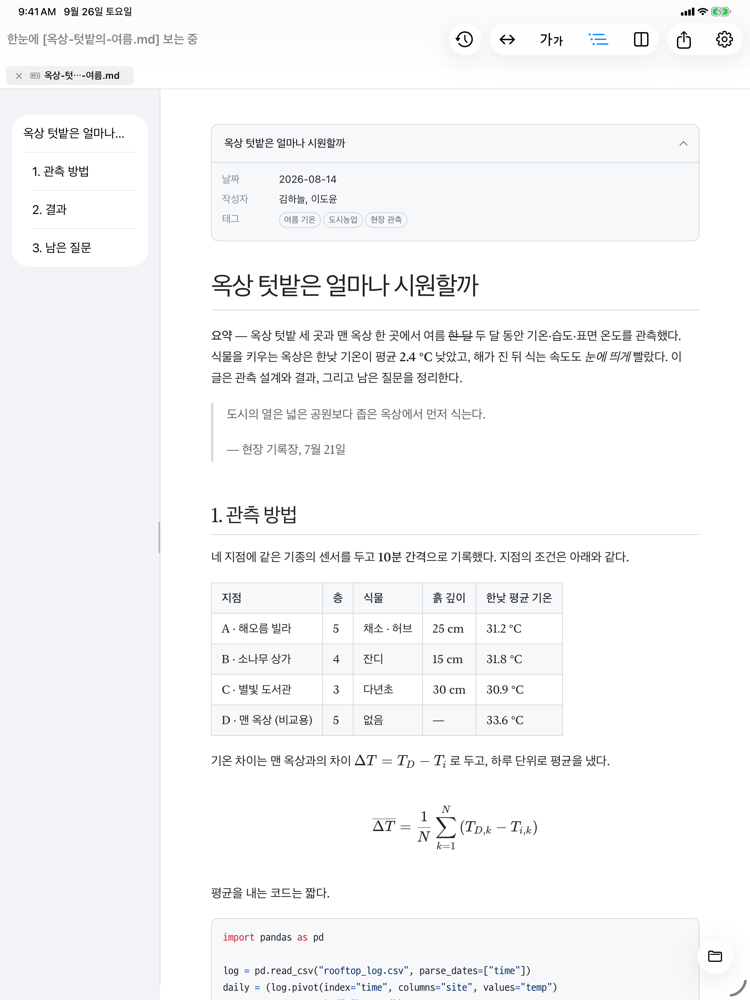
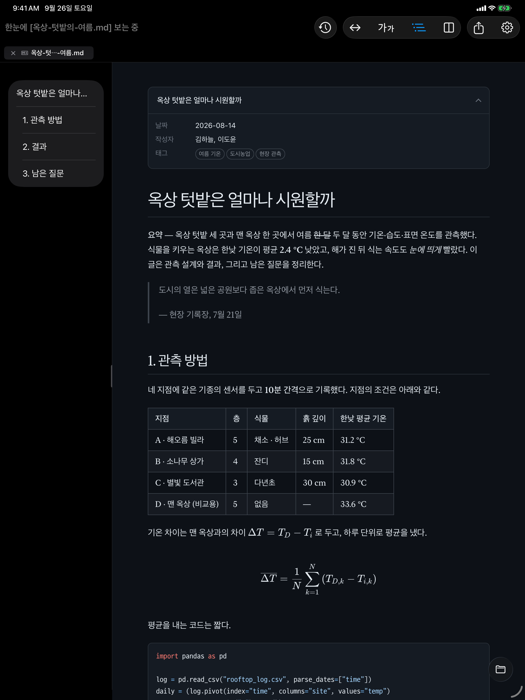
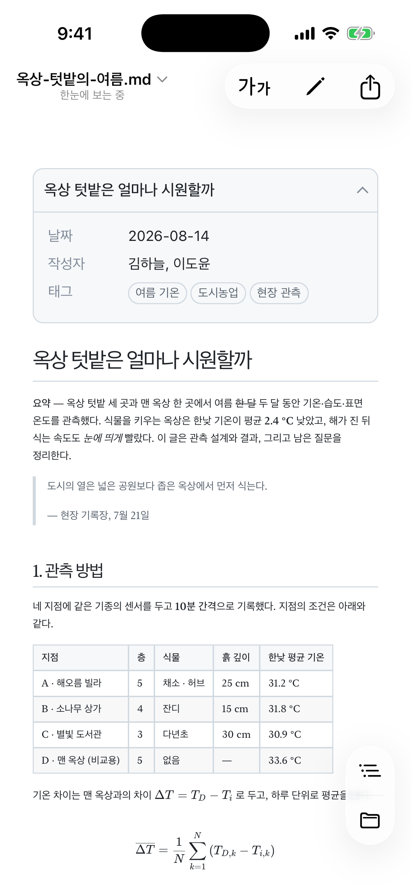
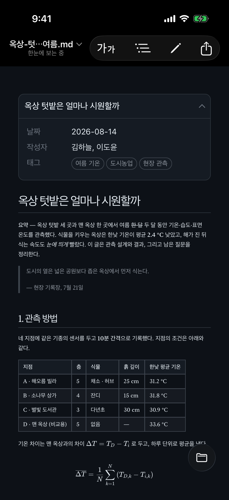

마크다운 뷰어MaciPadiPhone
마크다운 파일,
더블클릭하면 끝.
한눈에 들어온다
의 한눈. 마크다운 파일을 열기 위해 애쓰지 않아도 되도록, 단번에 보이게 만들었습니다.
위 화면은 캡처가 아니라 한눈과 같은 엔진으로 실제로 동작합니다. 마음껏 고쳐 보세요. 입력한 내용은 이 브라우저 밖으로 나가지 않습니다.
보던 작업에 끼어들지 않습니다
상관없는 마크다운 파일 하나 보려고, 열어 둔 프로젝트나 브라우저를 어지럽히고 싶지 않았습니다.
VS Code에서 연다지금 프로젝트 창에 섞인다브라우저에 끌어다 놓는다탭이 하나 더 는다확장 프로그램을 깔고 파일 접근 권한을 켠다설정 어딘가에서- 파일을 더블클릭한다따로 열리고, 닫으면 끝
먼저 앱을 켜고 파일을 찾아 들어갈 필요도 없습니다. 파일만 열면 됩니다.
원본 파일은
그대로 둡니다.
인코딩, BOM, 줄바꿈 형식을 바꾸지 않고 저장합니다. 한 글자를 고치면 딱 그 글자만 바뀝니다.
Git으로 관리하는 문서라면 이 차이가 큽니다. 줄바꿈이나 인코딩이 바뀌면 고친 건 한 줄인데 git diff에는 파일 전체가 바뀐 것으로 나옵니다. 한눈으로 저장하면 diff에는 실제로 고친 줄만 남습니다. 리뷰하는 사람도, 나중에 다시 보는 나도 헷갈리지 않습니다.
표를 다시 맞추고, 목록 기호와 줄바꿈을 자기 방식으로 바꿔 저장하는 편집기의 예
고친 줄만 바뀝니다
긴 문서도 편하게 읽힙니다
표와 체크박스, 코드 구문 강조, 수식, 다이어그램까지 깔끔하게 보여 줍니다. 본문 너비와 글꼴은 원하는 대로 고를 수 있습니다.
이 페이지에서 바로 해 보세요. 아래 버튼을 누르면 지금 보고 있는 이 페이지가 바로 바뀝니다.
본문과 제목을 따로 고를 수 있습니다. 명조 제목에 고딕 본문, 그 반대도 됩니다. 앱에서는 툴바의 가가 버튼으로 설정에 들어가지 않고 바로 바꿉니다.
- 목차문서의 제목을 왼쪽 패널에 모아 보여 줍니다. 패널 너비는 끌어서 조절할 수 있고, 다음에도 그대로 유지됩니다.
- 확대그림과 다이어그램은 눌러서 크게 봅니다. 다이어그램은 벡터라 아무리 키워도 선명합니다.
- 다크 모드라이트, 다크, 시스템 설정에 맞추기 중에서 고릅니다.
- 확대 · 축소핀치나 ⌘+ ⌘−. 프리뷰, 편집기, PDF 어디서나 같은 방법입니다.
보다가 바로 고칠 수 있습니다
⌘/ 하나로 프리뷰, 분할 화면, 편집을 오갑니다. 분할 화면에서는 양쪽 스크롤이 함께 움직입니다.
문법을 외울 필요도 없습니다. ⌥를 누르고 있으면 키보드 배열 그대로 놓인 문법 팔레트가 나타납니다. 같은 키를 한 번 더 누르면 해제됩니다.
- 한글 입력한글·일본어·중국어를 입력하는 도중에 글자가 꼬이지 않습니다. 멋대로 서식을 바꾸지도 않습니다.
- 찾기 · 바꾸기프리뷰, 편집기, PDF 어디서든 같은 방식으로 찾고 바꿉니다.
메모장처럼 쓰고,
닫아도 남아 있습니다
Windows 메모장처럼 ⌘N을 누르면 바로 쓰기 시작합니다. 파일 이름도, 저장할 곳도 묻지 않습니다.
앱을 닫았다가 다시 열어도 쓰던 글이 그대로 있습니다. 잠깐 적어 두고 버려도 되고, 남기고 싶을 때만 ⌘S로 저장하면 됩니다. 저장할 때 .md와 .txt 중에서 고를 수 있습니다.
JSON, XML, PDF도 엽니다
데이터 파일은 접고 펴면서 읽습니다. 처음에는 편집기와 같은 모양의 원문으로 열리고, 이름과 값만 남긴 트리, 키 · 형식 · 값으로 나눈 목록으로 바꿔 볼 수 있습니다. 트리에서는 같은 모양의 항목이 줄지어 있으면 표로 정리됩니다. 어느 방식으로 보든 숫자와 값은 파일에 적힌 그대로 보여 줍니다.
아래 화면 위쪽의 버튼으로 직접 바꿔 보세요.
Mac, iPad, iPhone에서 모두
Mac에서는 Finder에서 더블클릭하면 되고, iPad와 iPhone에서는 파일 앱에 있는 문서를 바로 엽니다. 고친 내용은 원본 파일에 저장됩니다.
라이트 모드와 다크 모드는 시스템 설정을 따릅니다. 아래 화면의 가운데 선을 좌우로 끌어 비교해 보세요.






필요한 기능은 다 있습니다
문서
- GFM 표 · 체크박스 · 취소선
- 코드 구문 강조
- KaTeX 수식
- Mermaid 다이어그램 22종
- YAML 프런트매터 카드
- 문서 간 링크 새 탭
읽기
- 본문 너비 4단계
- 본문 · 제목 글꼴 따로 선택
- 목차 패널
- 그림 · 다이어그램 확대
- 라이트 · 다크 · 자동
편집
- 프리뷰 · 분할 · 편집
- 스크롤 동기화
- 문법 팔레트 Mac
- 편집기 구문 강조
- 임시 문서 자동 백업
파일
- 바이트 보존 저장
- 탭 · 세션 복원
- 외부 변경 감지
- 저장 안 한 편집 되살림
- Quick Look 미리보기 Mac
다른 형식
- JSON · XML 원문 · 트리 · 목록
- YAML 원문 · 접기
- PDF 보기 · 내보내기
- .txt 편집
언어
- 한국어 · English
- 日本語 · 简体中文
더블클릭하면 한눈으로 열리게
Mac은 처음에 .md 파일을 다른 앱으로 엽니다. 한눈의 설정 › 일반 › 기본 앱에서 한 번만 설정하면, 그다음부터는 더블클릭만으로 한눈에서 열립니다.
기본 앱
문서는 기기를
떠나지 않습니다.
계정도, 로그인도, 광고도 없습니다. 분석 도구도 크래시 리포트도 넣지 않았습니다. 미리보기는 외부 접속이 막혀 있어서, 문서 속 외부 이미지가 몰래 불러와지는 일도 없습니다.
제가 쓰려고 만들었습니다
마크다운 파일 하나 여는 데 왜 이렇게 손이 많이 가는지 늘 불편했습니다. 메모장처럼 잠깐 적어 두는 기능도 별것 아닌데, 마음에 드는 앱이 없었습니다.
그래서 직접 만들었습니다. 제가 쓰는 앱이라 불편한 점은 저도 똑같이 느낍니다. 알려 주시면 고치겠습니다.
두 가지로 받을 수 있습니다
App Store
유료한 번 구매로 모든 기기에서
- 모든 기능
- Mac · iPad · iPhone
- 가족 공유 (최대 6명)
- App Store 자동 업데이트
미리 말씀드리면, 두 버전의 기능은 똑같습니다. App Store 구매에는 iPhone · iPad 앱과 가족 공유가 포함되고, 한눈 개발을 이어 가는 데 큰 힘이 됩니다.
자주 묻는 질문
인터넷 연결이 필요한가요?
아니요. 문서를 열고 읽고 고치는 데 인터넷은 쓰지 않습니다. 수식, 다이어그램, 글꼴이 모두 앱 안에 들어 있습니다.
홈페이지에서 받은 무료 버전(Mac)만 새 버전 확인을 위해 접속하며, 설정에서 끌 수 있습니다.
문서 속 그림이 안 보여요.
macOS 보안 정책 때문에 문서가 있는 폴더의 그림을 읽으려면 한 번 허용해야 합니다. 위쪽 안내 막대의 폴더 허용을 누르세요.
인터넷 주소로 걸린 그림은 불러오지 않습니다. 읽는 사람을 추적하는 데 쓰일 수 있어서입니다.
파일이 바뀌거나 망가지지 않나요?
한눈은 파일을 열었을 때의 형식 그대로 저장합니다. 인코딩, BOM, 줄바꿈 형식을 바꾸지 않습니다.
다른 앱이 같은 파일을 바꾸면 한눈이 다시 읽어 옵니다. 한눈에서 고치던 중이었다면 어느 쪽을 남길지 먼저 묻습니다.
Intel Mac에서도 쓸 수 있나요?
아니요. macOS 26 이상이 설치된 Apple 실리콘(M1 이후) Mac에서 쓸 수 있습니다.